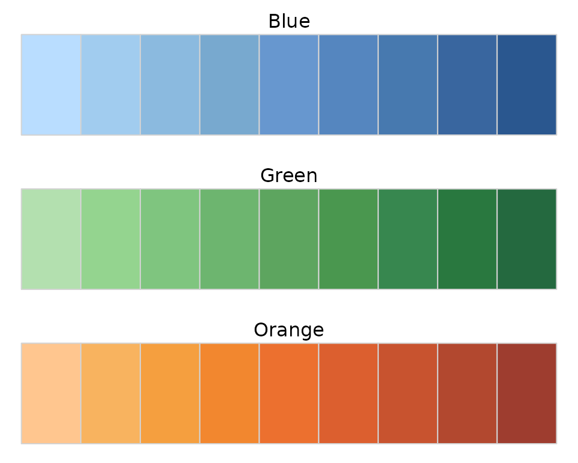
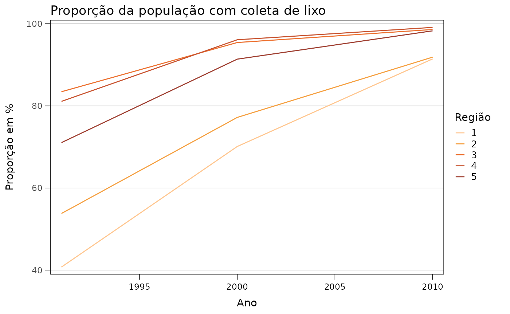

O ipeaplot é um pacote em R desenvolvido para
facilitar a padronização de gráficos e figuras seguindo a política
editorial do Instituto de Pesquisa Econômica Aplicada (Ipea). O pacote
traz algumas funções que facilitam o ajuste de formatação e de cores de
gráficos criados com o pacote ggplot2, garantindo a
conformidade com as diretrizes editoriais das publicações do Ipea.
Instalação
Você pode instalar a versão em desenvolvimento do ipeaplot direto do Github:
# Development version
utils::remove.packages('ipeaplot')
remotes::install_github("ipeadata-lab/ipeaplot")Visão geral do pacote.
O pacote ipeaplot foi desenhado para ser usado em conjunto com o pacote ggplot2, a biblioteca mais popular de visualização de dados em R. Atualmente, o ipeaplot inclui quatro funções principais para ajudar você a alterar o estilo de suas figuras de forma a seguir as diretrizes editoriais do Ipea:
-
theme_ipea()- formatação de elementos estilísticos da figura (eixos, fontes, linhas, grid, etc.); -
scale_color_ipea()escale_fill_ipea()- selecionam paleta de cores dentro de um conjunto de opções utilizadas pelo Ipea; -
save_eps()- salva a figura em formato.eps, um formato vetorial de alta resolução utilizado pela equipe do Editorial do Ipea.
Demonstração do pacote
Primeiro, vamos carregar as bibliotecas e uma amostra de dados que
usaremos para demonstrar o ipeaplot. Nos exemplos a
seguir, vamos utilizar os dados mtcars do R.
# Load packages
library(ipeaplot)
library(ggplot2)
library(dplyr)
library(abjData)
library(geobr)
library(patchwork)
# Load mtcars dataset
data(mtcars)No painel abaixo, à direita, temos a representação de um gráfico no formato padrão do ggplot2. Já à esquerda, destacamos o resultado obtido após a aplicação de linhas de código com as funções theme_ipea() e scale_color_ipea(). Essas funções incorporam à figura diretrizes visuais fundamentais das publicações do Ipea, proporcionando uma apresentação alinhada aos padrões estilístico estabelecidos pelo instituto. Nas próximas seções, vamos explorar como usar as funções do ipeaplot editar as figuras seguindo essas diretrizes.
fig_raw <- ggplot() +
geom_point(data = mtcars, aes(x = hp , y = mpg, color = cyl)) +
labs(y='Consumo de Combustível (milhas por galão)',
x ='Potência (Número de cavalos)',
color='Cilindradas')
fig_base <- fig_raw +
scale_color_ipea() +
theme_ipea()
fig_raw + fig_base
Paleta de cores
Existem duas funções básicas para selecionar a paleta de cores da
figura: scale_color_ipea() e
scale_fill_ipea(). O funcionamento de ambas funções seguem
a mesma lógica e parâmetros.
O parâmetro palette permite escolher uma paleta de cores
entre as opções de paletas utilizadas pelo Editorial do Ipea. O padrão
da função é a paleta "Blue", mas o parâmetro pode receber
diversas outras opções. Isso inclui tanto paletas com cores sequenciais
("Blue", "Green", "Orange", "Pink"), quanto paletes com
cores divergentes ("Red-Blue", "Orange-Blue").
Cores sequenciais: 
Cores divergentes:

Para usar as paletas de cores, basta adicionar uma das funções na
construção da sua figura com ggplot2:
# paleta sequencial verde
fig_base + scale_color_ipea(palette = "Green")
# paleta divergente de laranja a azul
fig_base + scale_color_ipea(palette = "Orange-Blue")
Escala de cores contínua e discreta
Por padrão, as funções scale_color_ipea() e
scale_fill_ipea() geram escalas de cores para variáveis
contínuas. Para utilizar uma escala de core para
variáveis discretas, basta passar o parâmetro
discrete = TRUE.
ggplot() +
geom_point(data = mtcars, aes(x = hp , y = mpg, color = factor(cyl))) +
labs(y='Consumo de Combustível\n(milhas por galão)',
x ='Potência (Número de cavalos)',
color='Cilindradas') +
scale_color_ipea(palette = "Orange", discrete = TRUE ) +
theme_ipea()
Além de selecionar a paleta de cores, as funções
scale_color_ipea() e scale_fill_ipea() trazem
ainda outros parâmetros que permitem escolher o separador de casa
decimal (ponto ou vírgula), ajustar o tamanho da legenda etc. A lista
completa de parâmetros está disponível na documentação da função
?scale_color_ipea().
Ajustando o theme das figuras
A função theme_ipea() aplica às figuras o padrão visual
de gráficos utilizados pelo Ipea em suas publicações. Ainda, a função
traz uma maneira conveniente de ajustar diversas características das
figuras, como por exemplo os eixos, posição da legenda, escalas dos
eixos etc.
Para ilustrar essa função, vamos utilizar alguns dados do Atlas do Desenvolvimento Humano organizados em um projeto de parceria entre Ipea, FJP e PNUD). Para carregar os dados, basta rodar:
df <- abjData::pnud_muni
head(df)
#> # A tibble: 6 × 124
#> uf ano codmun6 codmun7 municipio espvida fectot mort1 mort5 razdep t_env
#> <int> <int> <int> <int> <chr> <dbl> <dbl> <dbl> <dbl> <dbl> <dbl>
#> 1 11 1991 110001 1100015 ALTA FLOR… 62.0 4.08 45.6 58.0 73.5 1.82
#> 2 11 1991 110002 1100023 ARIQUEMES 66.0 3.72 32.4 41.4 70.0 1.82
#> 3 11 1991 110003 1100031 CABIXI 63.2 3.89 41.5 52.9 77.2 2.59
#> 4 11 1991 110004 1100049 CACOAL 65.0 3.81 35.4 45.2 71.1 2.47
#> 5 11 1991 110005 1100056 CEREJEIRAS 62.7 3.55 43 54.8 71.1 2.46
#> 6 11 1991 110006 1100064 COLORADO … 64.5 3.38 37.2 47.5 75.8 2.71
#> # ℹ 113 more variables: e_anosestudo <dbl>, t_atraso_0_basico <dbl>,
#> # t_atraso_0_fund <dbl>, t_atraso_0_med <dbl>, t_atraso_1_basico <dbl>,
#> # t_atraso_1_fund <dbl>, t_atraso_1_med <dbl>, t_atraso_2_basico <dbl>,
#> # t_atraso_2_fund <dbl>, t_atraso_2_med <dbl>, t_fbbas <dbl>, t_fbfund <dbl>,
#> # t_fbmed <dbl>, t_fbpre <dbl>, t_fbsuper <dbl>, t_flbas <dbl>,
#> # t_flfund <dbl>, t_flmed <dbl>, t_flpre <dbl>, t_flsuper <dbl>,
#> # t_freq0a3 <dbl>, t_freq4a5 <dbl>, t_freq4a6 <dbl>, t_freq5a6 <dbl>, …Essa base de dados traz para cada municipio uma série de indicadores socioeconômicos para diferentes anos. Neste exemplo abaixo, nós primeiro calculamos qual a proporção de domicílios que possuia coleta de esgoto em cada região do país a cada anos, e em seguida geramos o gráfico:
# cria variavel identificando a regiao de cada municipio
df <- df |>
mutate(regiao = substring(uf, 1, 1),
regiao = case_when(regiao == 1 ~ 'Norte',
regiao == 2 ~ 'Nordeste',
regiao == 3 ~ 'Sudeste',
regiao == 4 ~ 'Sul',
regiao == 5 ~ 'Centro Oeste'))
# calcula media de colega de esgoto por ano e regiao
df_fig1 <- df |>
mutate(regiao = substring(uf, 1, 1)) |>
group_by(ano, regiao) |>
summarise( t_lixo = weighted.mean(x=t_lixo, w = pop)) |>
collect()
# plot
ggplot() +
geom_line(data = df_fig1, aes(x=ano, y=t_lixo, color= regiao)) +
scale_color_ipea(discrete = T, palette = 'Orange') +
labs(title = 'Proporção da população com coleta de lixo', color='Região') +
ylab('Proporção em %') +
xlab('Ano') +
theme_ipea()
Os mesmos dados também poderiam ser visualizados com um gráfico de colunas:
ggplot() +
geom_col(data = df_fig1, aes(x=ano, y=t_lixo, fill= factor(ano))) +
scale_fill_ipea(discrete = T, palette = 'Green') +
labs(title = 'Proporção da população com coleta de lixo', fill='Ano') +
ylab('Proporção em %') +
xlab('Ano') +
facet_wrap(. ~ regiao) +
theme_ipea(x_breaks = 3)
Mapas
As funções do ipeaplot também facilitam na criação de mapas. No exemplo abaixo, nós vamos fazer um mapa choroplético que mostra a média de anos de estudo dos municípios do Brasil.
O primeiro passo, é baixar a malha espacial de municípios. Isso pode ser feito com o pacote geobr, desenvolvido pelo Ipea. Para baixar esses dados, basta rodar:
# Load municipality and state spatial data
mun <- geobr::read_municipality(year = 2010)
uf <- geobr::read_state(year = 2010)Agora nós precisamos fazer um merge dos dados espaciais e dos dados com as estimativas de anos de estudo. A variável de código do município é a nossa variável-chave para fazer o merge.
# Load municipality and state spatial data
mun = read_municipality()
uf = read_state()
# Subset and select specific columns from the 'pnud_muni' dataset
df_escola <- df |>
subset(ano == 2010) %>%
select(ano, code_muni = codmun7, e_anosestudo)
# Perform a left join between the 'mun' and 'pnud' data frames
df3 <- dplyr::left_join(mun, df_escola, by = 'code_muni')Agora basta criar o mapa:
fig_map <- ggplot() +
geom_sf(data = df3, aes(fill = e_anosestudo), color = NA) +
geom_sf(data = uf, color = "black", fill = NA) +
ggtitle("Média de anos de estudo") +
scale_fill_ipea(palette = 'Orange-Blue',
name='Anos de\nestudo') +
theme_ipea(axis_lines = 'none', include_ticks = F, axis_values = F)
fig_map
Salvando figura
Finalmente, o pacote ipeaplot traz a função
save_eps() para facilitar a exportação da figura para um
arquivo em formato .eps, um formato de imagem vetorial de
alta resolução.
Basta passar o objeto ggplot da figura que deseja salvar, o nome do
arquivo file.name e as dimensões da figura
width e height em centímetros:
save_eps(fig2,
file.name = "figura_2.eps")